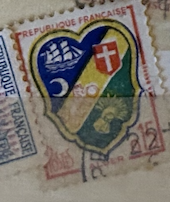
| SOURCE | TITLE| IMAGE MATCH | click to source page |
| Ay.by | 1971 Франция фауна хамелеон чистая клей MNH** выпускалась одиночкой (4-12). Купить в Минске — Марки Ay.by. Лот 5040236648 | 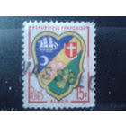 |
| French Philately | 1941 Yt 502 Ship Sc B114 - French Philately - Stamps of France for Sale | 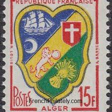 |
| Shutterstock | France Circa 1958 Stamp Printed France Stock Photo 127181978 | Shutterstock | 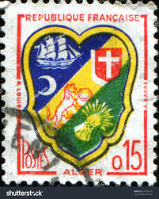 |
| esam.ir | تمبر کلاسیک کشور فرانسه | 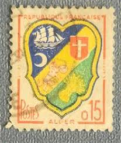 |
| Dreamstime.com | 301 Postes French Stock Photos - Free & Royalty-Free Stock Photos from Dreamstime | 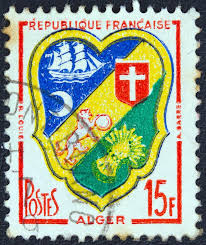 |
| Mercado Libre | Estampilla Francia 1959 | MercadoLibre 📦 | 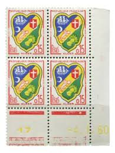 |
| eBay | Luxury Test Of The N°1232 Coat Of Arms Of Algiers | eBay | 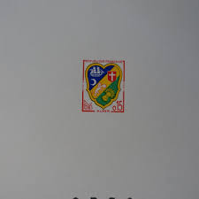 |
| Dreamstime.com | Amiens Coat Stock Photos - Free & Royalty-Free Stock Photos from Dreamstime | 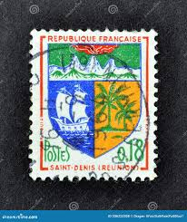 |
| eBay | Reunion 1964-6fr on 18c Arms Of Saint-Denis Surcharged- Block of 4 MNH A32 | eBay | 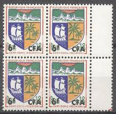 |
| HipStamp | Brazil Scott #635-639 Stamps - Mint Set | Central & South America - Brazil, General Issue Stamp / HipStamp | 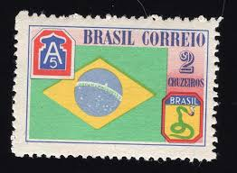 |
| Dreamstime.com | Postage Stamp Printed in Brazil Shows Homage To the Brazilian Army, Brazilian Expeditionary Force Serie, Circa 1945 Editorial Photography - Image of postage, seal: 206794097 | 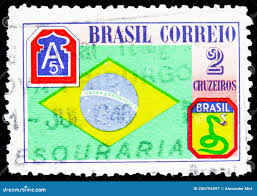 |
| Heraldry of the World | France (heraldic stamps and philatelic material) | 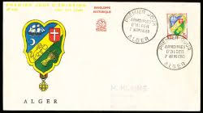 |
| Etsy | The Vintage French Six Postage Stamps.dont Know the Years. - Etsy | 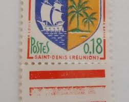 |
| Dreamstime.com | 427 Wonderful Postage Stamps Stock Photos - Free & Royalty-Free Stock Photos from Dreamstime | 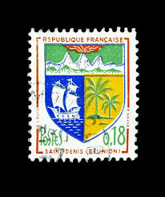 |
| eBay | JAMAICA SC#501 ROYAL WEDDING SOUVENIR MINI SHEET MNH OLD COMMEMORATIVE STAMPS | eBay | 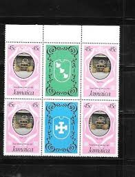 |
| GetArchive | 24 1945 stamps of brazil Images: PICRYL - Public Domain Media Search Engine Public Domain Search | 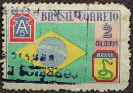 |
| HipStamp | Browse Products in Caribbean > Barbados / HipStamp | 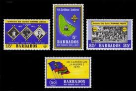 |
| iStock | Postage Stamp France 1965 Show Paris Coat Of Arms Stock Photo - Download Image Now - Paris - France, Postage Stamp, Blue - iStock | 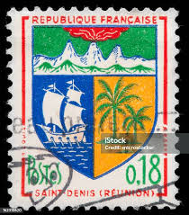 |
| eBay | Boy Scouts Barbadian Stamps (1966-Now) for sale | eBay | 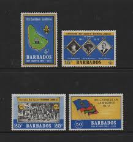 |
| HipStamp | Fiji #206-207 1964 BOY Scouts 50th Anniv. Mint VF LH O.G a | Australia & Oceania - Fiji, General Issue Stamp / HipStamp | 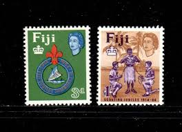 |
| Maps on Stamps | Maps on Stamps : St. Vincent | A Database of Cartophilately | 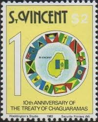 |
| Stamp Community Forum | Lets See Your Aviation Stamps - Page 15 - Stamp Community Forum | 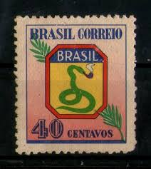 |
| Maps on Stamps | Maps on Stamps : St. Vincent | A Database of Cartophilately | 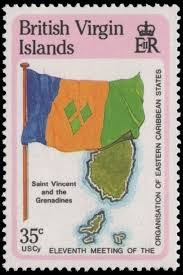 |
| lastdodo.com | Coat of arms Zamora Chinchipe province 50 (1971) - Ecuador - LastDodo | 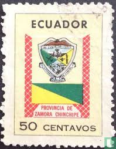 |
| PicClick UK | BERMUDA MNH 1987 Sg549-552 50Th Anv Of Inauguration Of Bermuda-Usa Air Service £7.00 - PicClick UK | 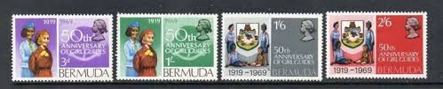 |
| eBay | Ecuador #832 XF/NH Imperf Between Block Of Six | eBay | 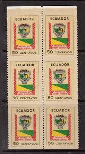 |
| eBay | Solomon Islander Flag & National Emblem Postal Stamps for sale | eBay | 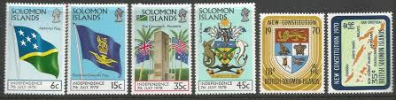 |
| eBay | Politicians First Day Cover Brazil Stamps for sale | eBay | 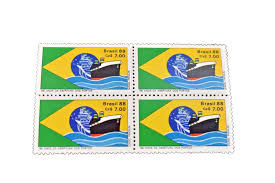 |
| Free stamp catalogue | Stamps from Barbados - Freestampcatalogue.com - The free online stampcatalogue with over 500.000 stamps listed. | 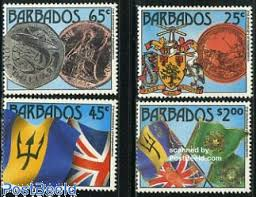 |
| eBay | France 1964 - 1965 18c Arms Saint Denis , Reunion, Palm trees, Ship MNH SC 1094 | eBay | 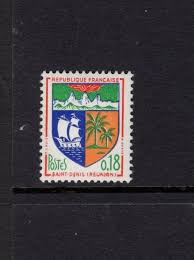 |
| Collectables Warehouse | 1965 Jamaica 3d stamp on piece cd Belfield | Collectables Warehou | 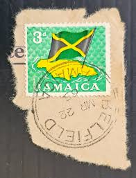 |
| Stamp News Online | Flag Stamps - June 2011 | 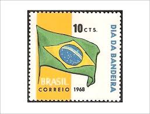 |
| commonwealthstamps.com | Fiji 1964 50th Anniv of Fijian Scout Movement SG 336 Fine Used | 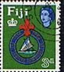 |
| iStock | Green Snake Smoking A Pipe On Brazilian Stamp Stock Photo - Download Image Now - Brazil, Postage Stamp, Old-fashioned - iStock | 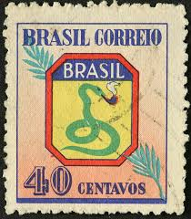 |
| Maps on Stamps | Maps on Stamps : British Virgin islands | A Database of Cartophilately | 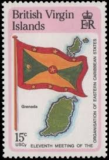 |
| eBay | Ecuador Stamps # 832 Imperf Between Pair NH | eBay | 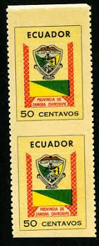 |
| HipStamp | BARBADOS - 1972 - Scouts, 50th Anniv - Perf 4v Set - Mint Never Hinged | Caribbean - Barbados, General Issue Stamp / HipStamp | 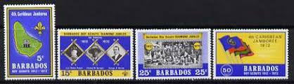 |
| October strike dates and registrar changeover day : r/doctorsUK | 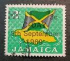 | |
| eBay | Boy Scouts Fijian Stamps (1967-Now) for sale | eBay | 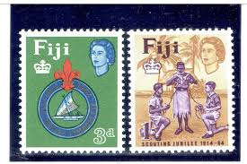 |
| eBay | (AOP) Jamaica 1903-04 5v unused (no gum) | eBay | 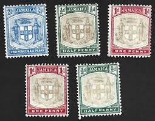 |
| Brazilian Stamps (@brazilianstamps) • Facebook | 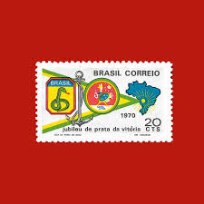 | |
| Idalis Monserrate adlı kullanıcının SP concert panosundaki Pin | 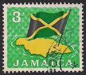 | |
| Shutterstock | 11+ Thousand Saint Denis Royalty-Free Images, Stock Photos & Pictures | Shutterstock | 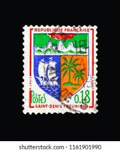 |
| eBay | Stamps barbados 1971 Mi 333-336 (complete issue) MNH 1971 Independence | eBay | 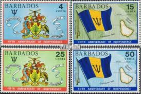 |
| iStock | Brazilian Flag On Old Postage Stamp Stock Photo - Download Image Now - Brazil, Brazilian Flag, Flag - iStock | 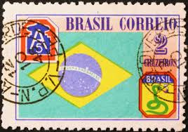 |
| Shutterstock | 103+ Thousand Santuário Nacional De Cristo Rei Royalty-Free Images, Stock Photos & Pictures | Shutterstock | 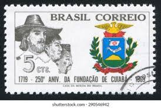 |
| HipStamp | Tuvalu 255-256 MNH VF | Australia & Oceania - Tuvalu, General Issue Stamp / HipStamp | 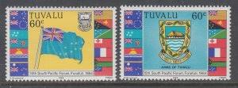 |
| eBay | 58 BRAZIL 2019 BRAPEX 2019, PHILATELIC EXHIBITION, FLAGS, BRIDGES, BLOCK MNH | eBay | 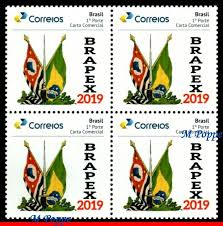 |
| Blogger.com | FLAGS and STAMPS: Trees , Crops and Fruits on Flags | 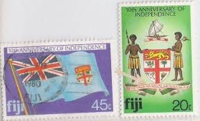 |
| eBay | JAMAICA 1927- 1973 Various 7 Pcs Stamps, Used,VF, See Photos | eBay | |
| Shutterstock | Brazil Circa 1975 Stamp Printed By Stock Photo 240432970 | Shutterstock | |
| eBay | Edward VII (1902-1910) Jamaican Postal Stamps (Pre - 1962) for sale | eBay | |
| Free stamp catalogue | Stamps from Montserrat - Freestampcatalogue.com - The free online stampcatalogue with over 500.000 stamps listed. | |
| eBay | Jamestown Stamp Company 3-N 621-3 Varieties United Nations And Grenada | eBay | |
| eBay | HAITI , 1968 , BISHOPRIC HAITI , REG & AIRMAIL , SET OF 4 STAMPS , PERF , USED | eBay | |
| eBay | S0031 F.S.A.T. 1959 Coat of Arms 1v. MNH | eBay | |
| eBay | LOT OF 9 JAMAICA STAMP BLOCKS - MINT CONDITION IN BOOKLET - OFC-2 | eBay | |
| eBay | Brazil SC 635-9 MOG (8ekp) | eBay | |
| eBay | Brazil 1671-1675 used 1978 Stamp Exhibition | eBay |